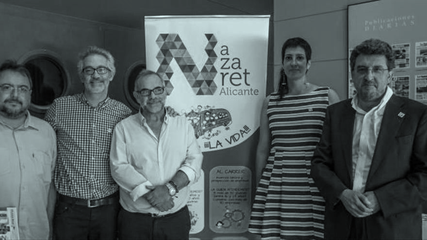

PROGRAMAS DE JUVENTUD
PROGRAMAS DE JUVENTUD EN MEDIO ABIERTOEstamos trabajando con jóvenes en la calle, en sus casas, en sus barrios… Entendemos que en muchas situaciones, ese es el lugar en el que hay que estar con ellos. En este momento esto lo desarrollamos con dos programas concretos:
PROGRAMA DE EMANCIPACIÓN
Nazaret lleva mucho tiempo ofreciendo un Programa de Emancipación que consiste en el acompañamiento socio educativo y apoyo residencial a jóvenes mayores de edad que carecen de recursos personales y familiares para comenzar una vida autónoma e independiente con garantías. Este Programa de Emancipación se concreta en: - Hogar Emancipación Garbinet en Alicante.
Con este piso, Nazaret comenzó su andadura en el campo de la emancipación y, a día de hoy, forma parte de la Red de emancipación de la Consellería de Igualdad y Políticas Inclusivas. Donde atendemos a jóvenes de entre 18 y 25 años extutelados, que han cesado en su acogimiento familiar o residencial, o que han finalizado una medida judicial de internamiento en un centro socio-educativo. Es un piso de cuatro plazas para estos jóvenes.
Para entrar en este programa es necesario: La voluntariedad, El compromiso en su propio itinerario de emancipación y, No contar con redes de apoyo. El acompañamiento socio-educativo del Equipo permite la vinculación necesaria para el logro de los objetivos propuestos de autonomía e inserción socio-laboral. Además, sigue siendo referencia y apoyo para otros muchos jóvenes que solicitan una mano amiga que les oriente en momentos vitales difíciles.
PISOS DE EMANCIPACIÓN
ESPERANZA PERTUSA - ELCHE
Es un Proyecto innovador, pionero. Donde colaboran el Ayuntamiento de Elche, que pone a disposición dos pisos para cinco jóvenes, la Fundación Esperanza Pertusa, como entidad privada sin ánimo de lucro que colabora con terceros en acción social, y Nazaret como obra social de la Compañía de Jesús aportando su experiencia en la campo de la emancipación.
PROGRAMA DE INSERCIÓN
LABORAL “AL CARRER”
Es un programa de acompañamiento y tutorización en los itinerarios de formación y búsqueda de empleo para jóvenes de entre 16 y 24 años que tienen o han tenido alguna vinculación con Nazaret.
El Programa Alcarrer, tiene la función de acompañar a todos aquellos jóvenes que voluntariamente, quieran tener una oportunidad para aprender y ser tutorizados en este árduo camino que es la inserción laboral.
Se ofrece a este colectivo una atención social, tutorías de orientación laboral, talleres prelaborales centrados en trabajar la autoestima y habilidades sociales, así como formación en nuevas tecnologías y posibilidad de contactar con empresas, visitarlas y en algunos casos poder realizar prácticas en ellas. + info